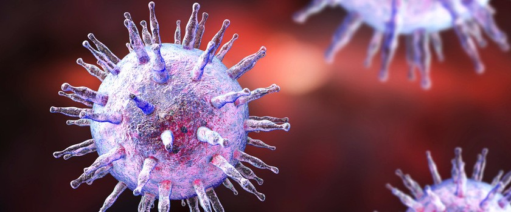

Korzyści biotechnologii:
- Leczenie chorób genetycznych poprzez manipulowanie DNA, umożliwiaja naprawę lub zastąpienie uszkodzonych genów.
- Produkcja leków w sposób bardziej precyzyjny i efektywny niż tradycyjne metody.
- Ochrona środowiska poprzez identyfikację i usuwanie zanieczyszczeń, takich jak toksyny i metale ciężkie.
- Hodowla roślin i zwierząt które mają pożądane cechy, takie jak większa wydajność, większa odporność na choroby czy lepsza wartość odżywcza.
Zagrożenia biotechnologii:
- Bezpieczeństwo biologiczne. Niektóre zastosowania biotechnologii molekularnej mogą prowadzić do stworzenia niebezpiecznych organizmów lub substancji.
- Etyczne dylematy takie jak klonowanie ludzi, manipulowanie genetyczne zarodków czy kreowanie organizmów z cechami poza naturalnymi możliwościami.
- Dyskryminacja genetyczna. Osoby z niepożądanymi cechami genetycznymi mogą być traktowane w sposób niesprawiedliwy.
- Skutki uboczne i nadużycia. Nowe metody leczenia mogą powodować nieznane nam jeszcze skutki uboczne.

Grzegorz Winsztal 4I